| |
Six Flags Magic Mountain 2023-2024
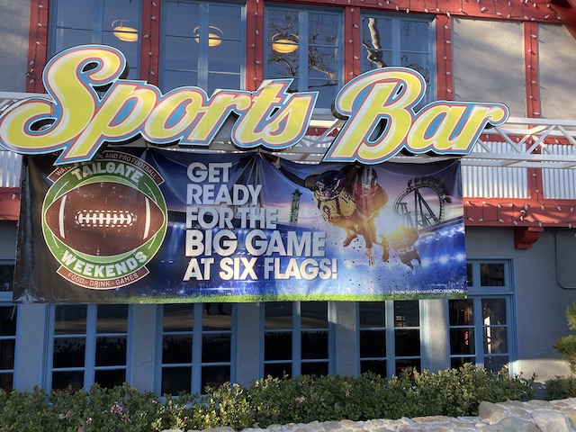
All right. So our last SFMM update was for Wonder Woman's opening, as well as just our 2022 update. However, we've had SEVERAL visits since then. We did say "Nah. Not gonna do a SFMM 2023 Update". But we did intend to do one for 2024. And......that too, didn't have enough. But we had taken too many visits to just all go by without an update. So.....we decided to combine all our 2023 & 2024 visits and do one update for both since.....while not much has happened, there still are a few fun moments worth sharing over the years. All right. Visit #1. Now tell me. Why is SFMM advertising DejaVu, which left the park over a decade ago and died a couple years ago after meeting its demise from its new home.
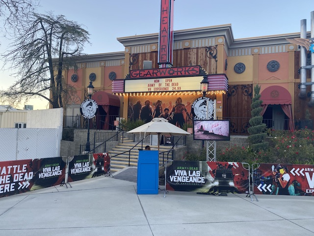
Huh. I guess this is some sort of VR Show. Not sure what it's about. So long ago and don't feel like researching it.
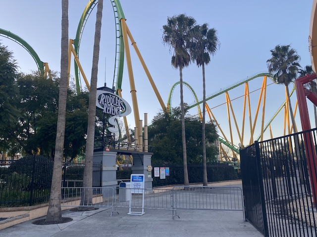
Hey! Wanna go ride Riddlers Reve.....GOD DAMN IT!!!
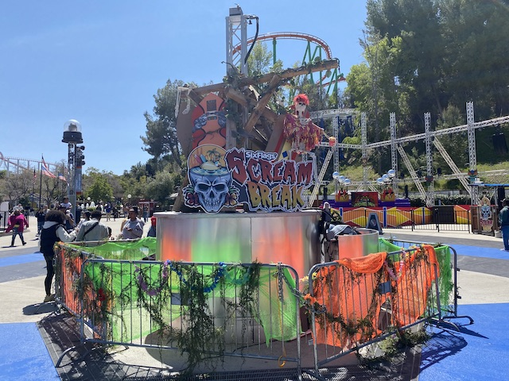
All right. Visit #2. WHAT THE HELL!!? IT'S APRIL!!! WHY IS THE FRIGHT FEST STUFF OUT!!?
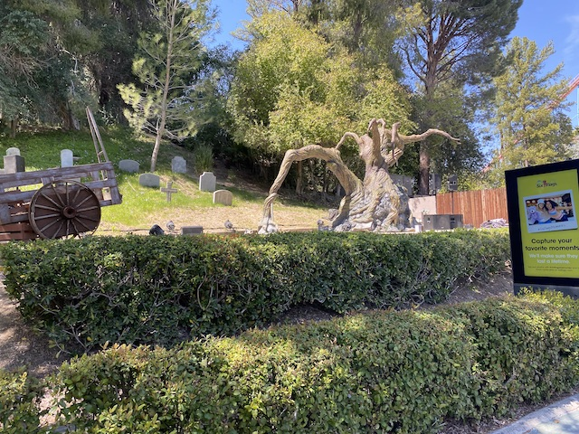
So I guess they're doing Scream Break, which.....I guess they need more things. So.....Halloween in April. Hey, I know a certain Halloween-obsessed friend who's all over this idea. ;)
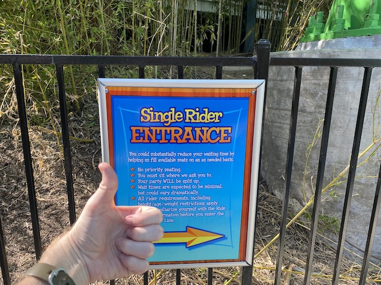
As far as I can tell, this Single Riders Line was only a temporary measure. Dear SFMM, BRING IT BACK!!! YOU NEED MORE SINGLE RIDER LINES!!! Bring back this one for Tatsu, and then keep adding so many more.
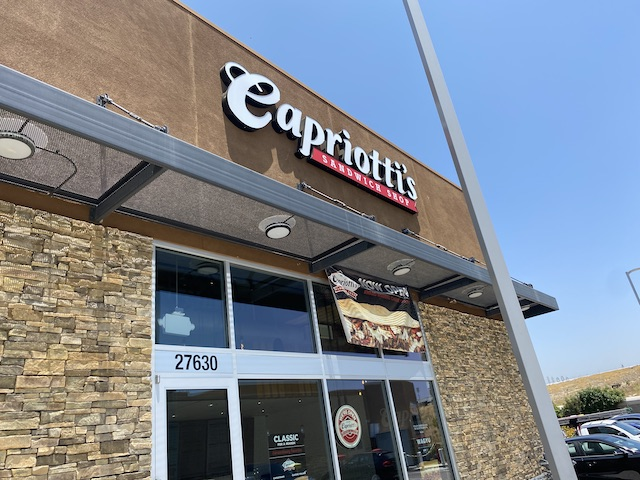
Visit #3. And....trying a new sandwich place right by SFMM for lunch.
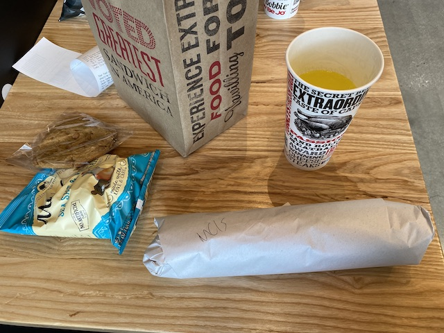
The upside? This is a REALLY good place. Sort of like a more indie Jersey Mikes. The downside? It's EXPENSIVE!!! Yeah. Sandwich shops are one of the more expensive fast food places, despite being something you can do st home (as long as you know the sandwich shop's secrets).
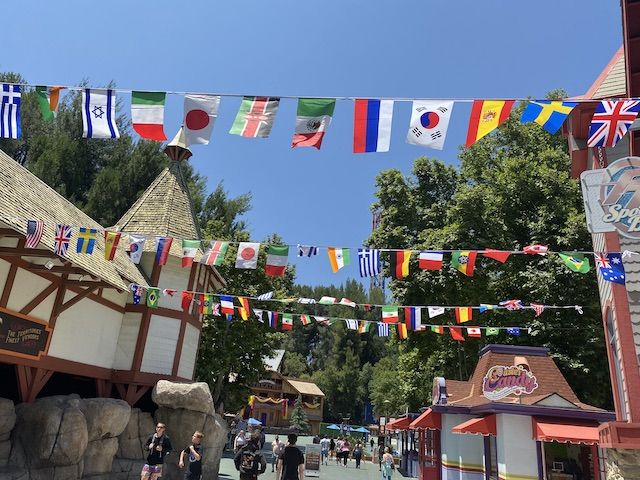
Just a quick reminder that this is Six Flags, with all those flags flying. ;)
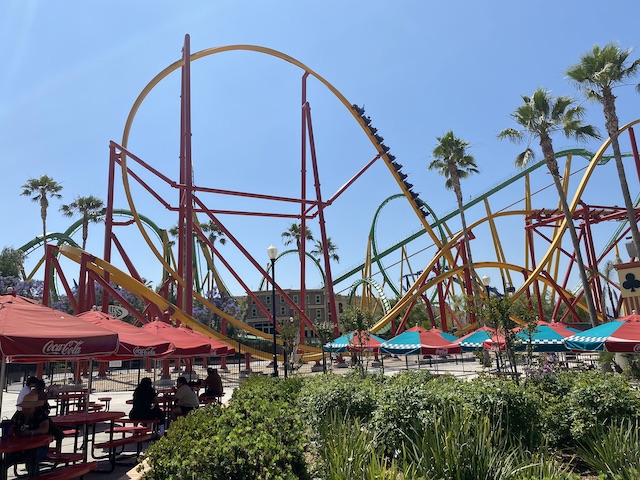
Yeah. Time for some Wonder Woman goodness. =)
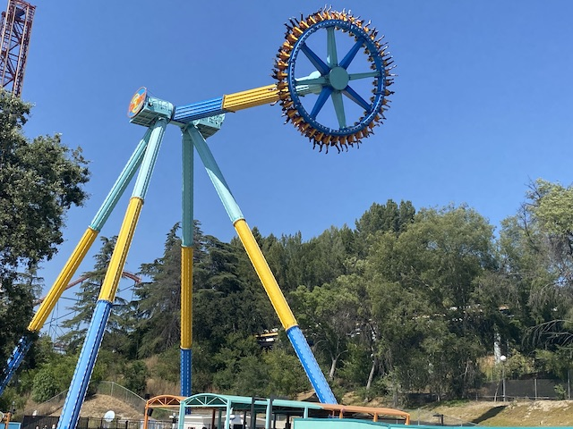
I know I don't usually do Crazanity on most visits due to its low capacity and long lines, but this still is a really fun ride.
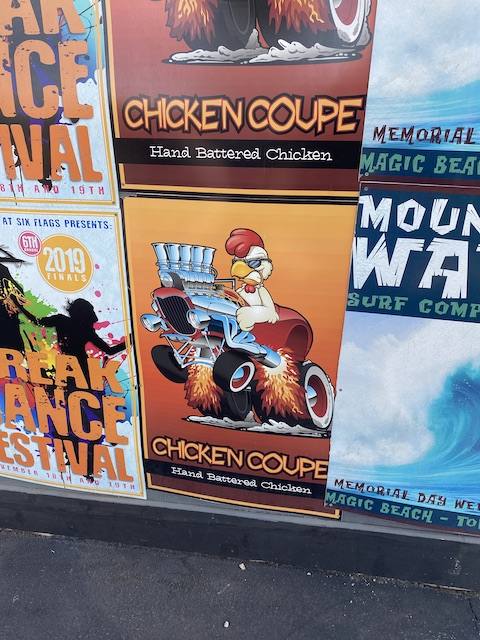
Ooh! Did SFMM get a new resteraunt!? Nope. Just some cool new artwork promoting their same old chicken tenders that I'm pretty certain you can buy from the frozen foods section of your grocery store.
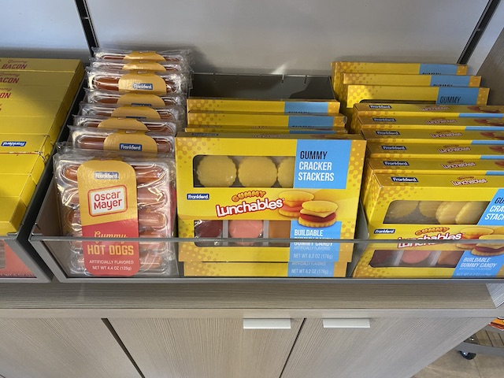
*Sigh* I know Six Flags doesn't actually sell super high quality food. But have they actually resorted to selling Lunchables!? No wait, Never mind. That's just gummy candy.
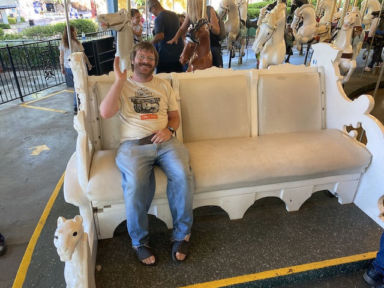
MOST EXCITING RIDE AT SIX FLAGS MAGIC MOUNTAIN!!!
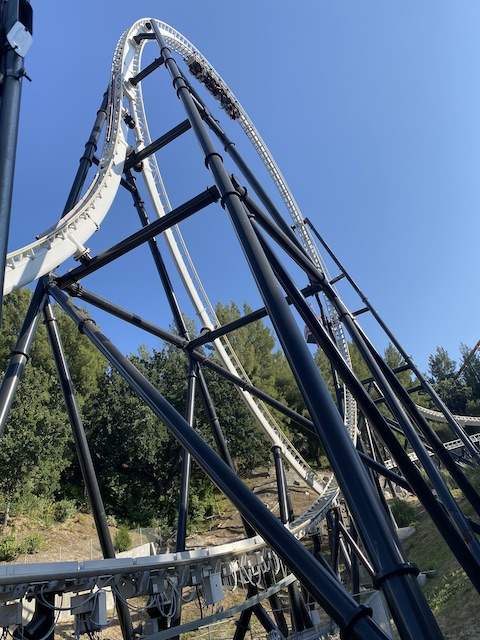
Not much to say other than.....I REALLY like this Full Throttle picture.
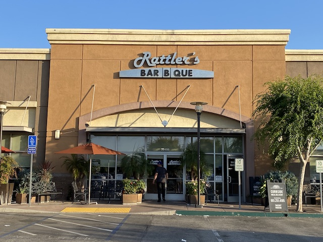
And....yeah. We had to go back to Rattlers. Still my favorite resteraunt in Valencia, and it had been ANOTHER 5 YEARS SINCE OUR LAST VISIT!!! I really need to make sure that this doesn't just inadvertantly become a twice a decade thing, especially since I go to SFMM freaking often.
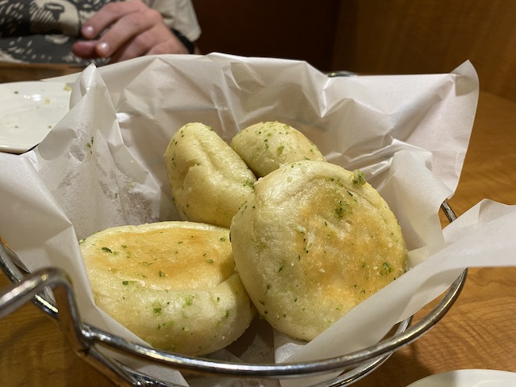
As good as these garlic rolls are, don't fill up on them. Cause the actual meat is even better. ;)
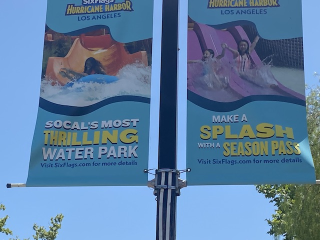
Visit #4. And....yeah. This was our Six Flags Hurricane Harbor day.
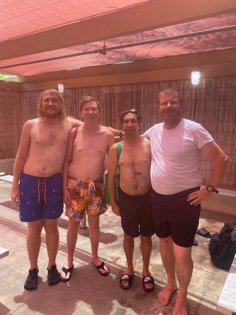
Yeah. You can tell that this was never intended to be an actual update as....there's no photos of the waterpark. All we have is this group photo Jason took of all of us for his Instagram.
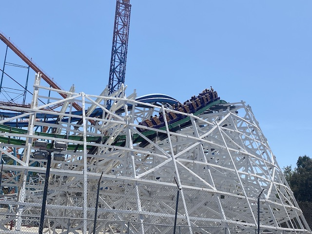
Though we also did pop into the park to do some coasters too.
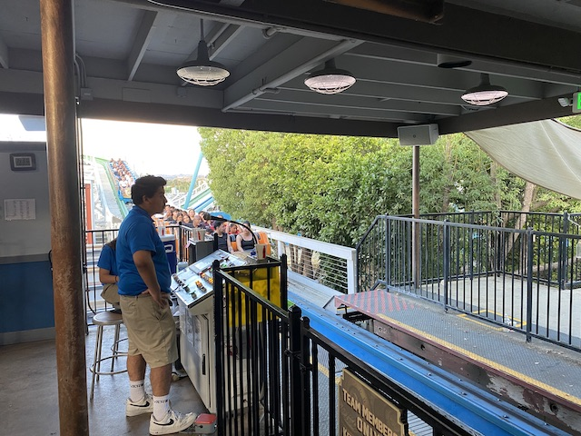
HOLY SH*T!!! THE OPERATIONS ON TWISTED COLLOSUS.....NOT ONLY WERE WE NOT EVEN CLOSE TO RACING!!! NOT ONLY DID WE STACK, WE F*CKING DOUBLE STACKED!!! DOUBLE STACKED!!! ON A RIDE WITH AS MUCH CAPACITY AS TWISTED COLLOSUS!!! I CAN NOT EMPHASIZE HOW BAD THIS IS!!! FIRE ALL THE EMPLOYEES!!! F*CK IT!!! I'LL OPERATE IT MYSELF AND DO IT FASTER THAN THIS ENTIRE PATHETIC CREW!!!
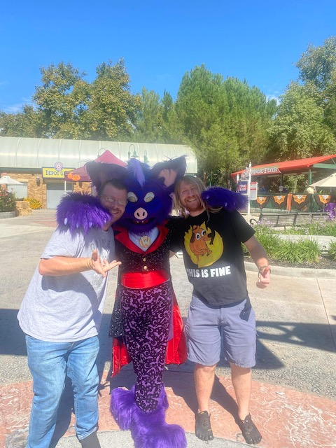
Visit #5. Pretty much nothing to this visit aside from....cute photo of us with.....this Fright Fest monster.
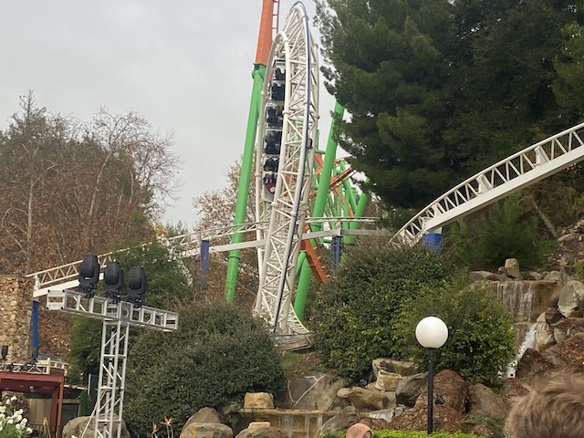
Visit #6. Yeah. This is our Holiday in the Park visit. And hey. Doing some coasters too, such as Revolution.
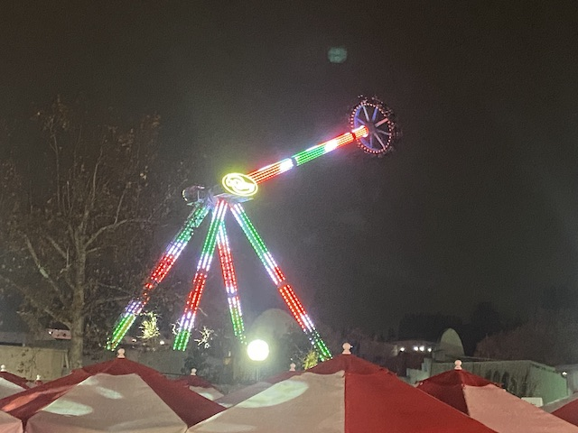
Still love how they just turn Crazanity into part of the lights for Holiday in the Park.
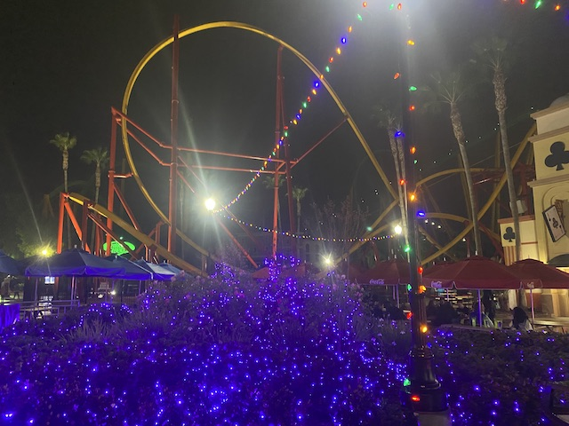
The visit may be all about the Christmas lights, but this is still IncredibleCOASTERS. And yeah. There was a lot of coaster goodness.
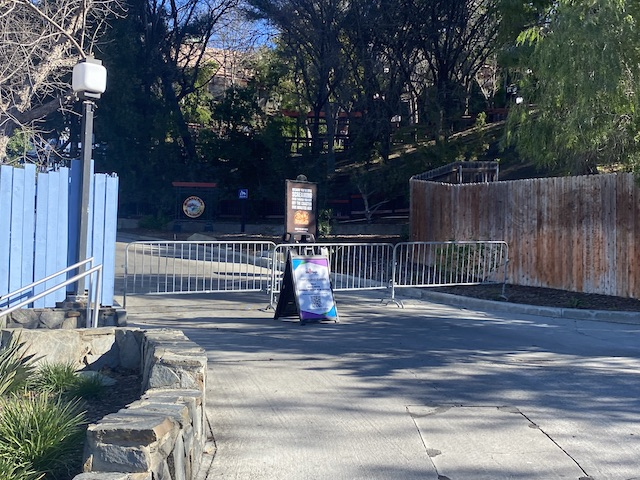
Visit #7. Sorry folks. Saumari Summit is closed for 2 weeks for cleaning and repairs. Sorry.
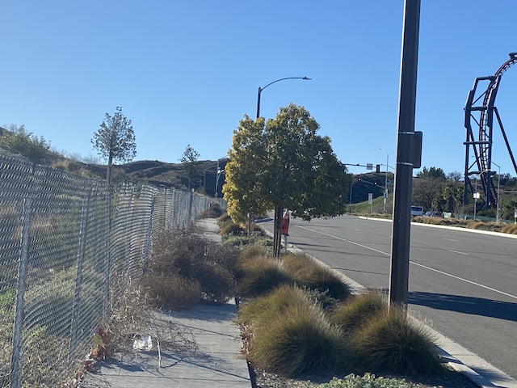
Walking back to the park from Wendys, and......oh boy. It looks like the tumbleweed doesn't want us returning to SFMM. Because tumbleweeds are assholes like that.
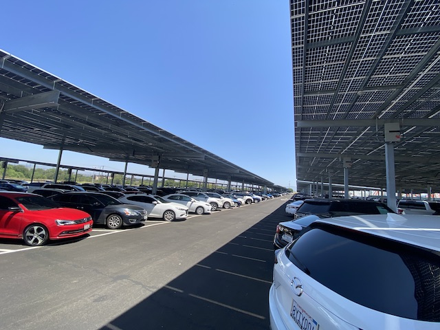
Visit #8. And....we actually see SFMM's big new addition for 2024! Solar covers for their parking lot. I know that may not sound exciting or anything worth praising, but.....this is EXACTLY what SFMM needs! Not only does it provide cheap energy to run the park, helping them save money, but it also provides shade, keeping the inside of my car cool on summer days. Not to mention, it helps with climate change, which......F*CKING DO SOMETHING ABOUT CLIMATE CHANGE!!! DO SOMETHING TO SOLVE THE PROBLEM!!! NOT THROW GASOLINE ON IT!!! Seriously, more places need to do this!
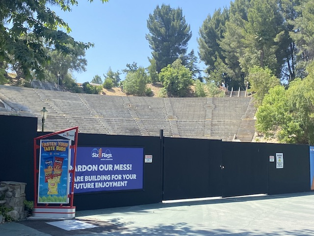
I keep hearing that this theater is gonna be torn down for a new coaster for 2026. I know this is a park that really doesn't need one, but hey. That theater never meant anything to me. And....we'll see what gets added there later on this year.
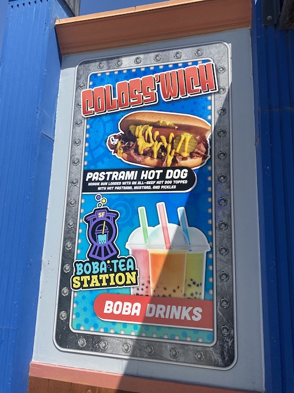
Ooh! Boba! Yeah. Not gonna get that here due to money, but I am craving Boba now. Gonna stop at a Boba shop sometime soon.
 WONDER WOMAN VS RIDDLERS REVENGE!!! FIGHT!!!
WONDER WOMAN VS RIDDLERS REVENGE!!! FIGHT!!!
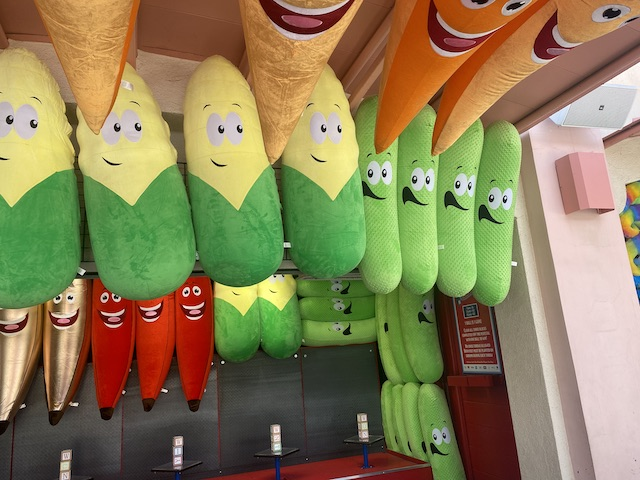
For those of you with no friends, you can cheer yourself up by snuggling into bed with some corn. =)
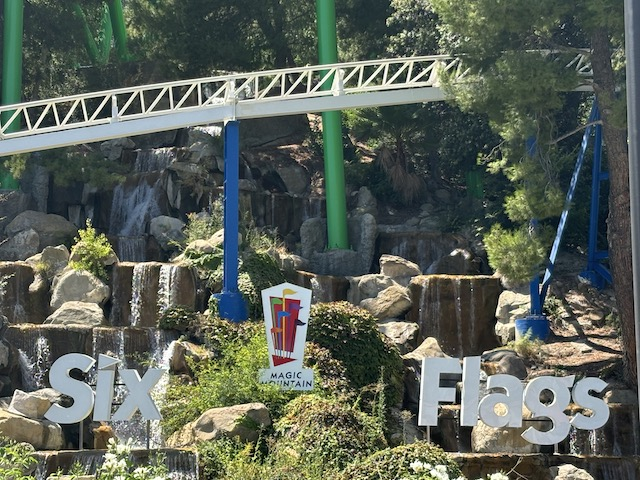
And finally, Visit #9. Hey. I really like the way this looks. Nice addition, Six Flags. =)
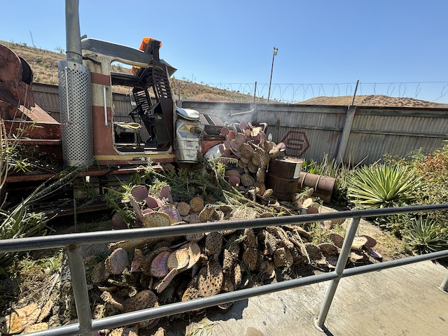
You know, for being an abandoned car in the middle of this apocalypse, that does look rather nice.
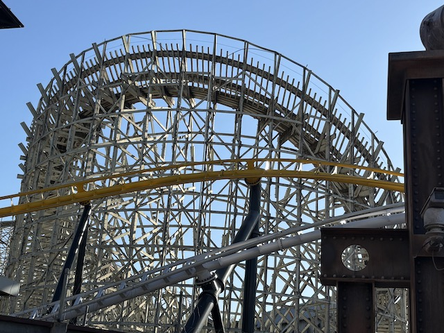
I know it's not the best GCI by any means, but it's still a really fun ride.
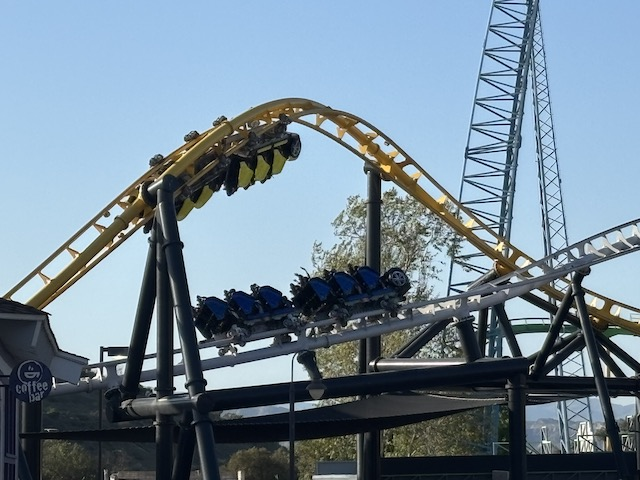
Hey Twisted Collosus! Look what I can do! =P
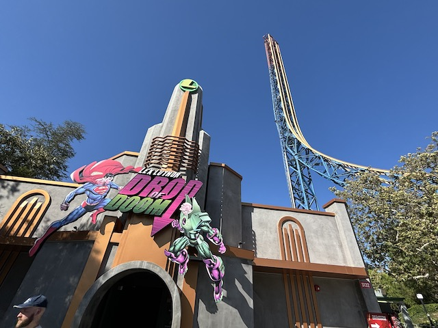
All right. Time to ride Jeff Bezos....I mean Lex Luthor.
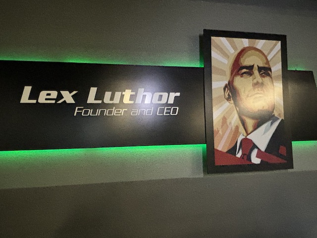
Tell me. Did Lex Luthor spend millions trying to buy influence from a fascist? Nah. I don't even think he's THAT evil.
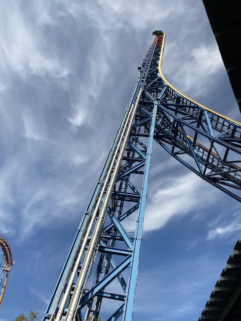
Well, it looks like Lex Luthor is getting its record back after Six Flags went on a coaster genocide spree (big rant on that in a future update), and.....one of the casualties was Zumanjaro.
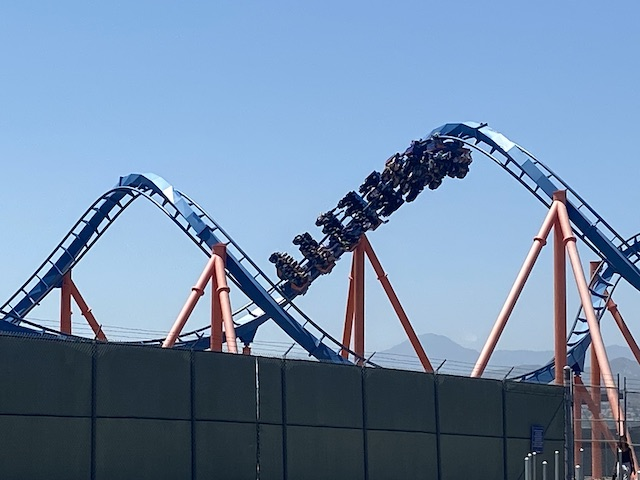
Time for some fun on Scream.
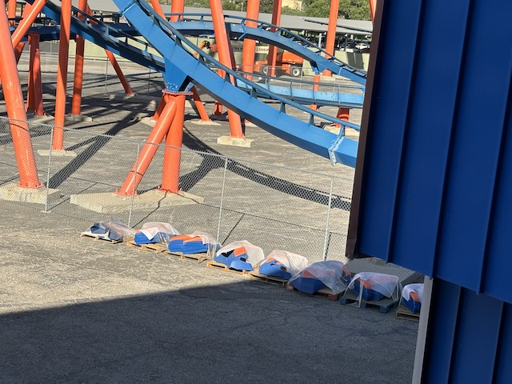
Hello Scream train parts just chilling underneath the ride.
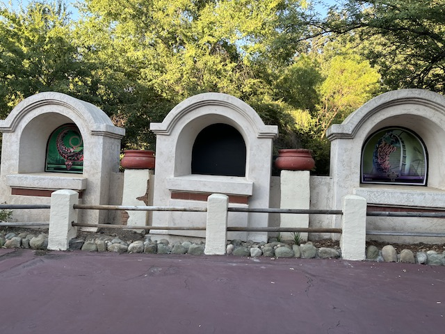
And that's the end of this update. Just a quick reminder that just because a coaster was ommitted doesn't mean that we didn't ride it (X2). Hopefully a more full SFMM update will come with even more fun and adventures from the park.
Home
|